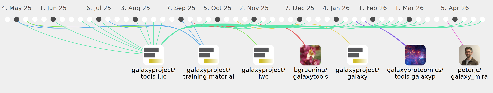

Galaxy Community Activities
RZ9082
RZ9082
https://github.com/RZ9082
Commits all-time:
41
Commits last year:
41

galaxyproject/tools-iuc
(33)
912c211
c77021f
01b10e6
24b188b
227107d
37d3c22
76c0fa3
5b6d267
c051762
2360443
4d77c1e
c95a4b0
c0c25a9
3d9b4b4
a0d6267
eda9afe
df424ba
361de6d
43a8ab0
d3ba3d3
92a0bae
2596010
4b7ab83
1bed0ce
9d5bc43
ac4610f
fc685e8
1a2357e
cb24109
5aac8c4
fa81c8a
373300c
25f5334
bgruening/galaxytools
(8)
675c458
6eb4aa8
d52414c
dcb4abd
fa7deee
3eb0261
19ef137
f92fc51